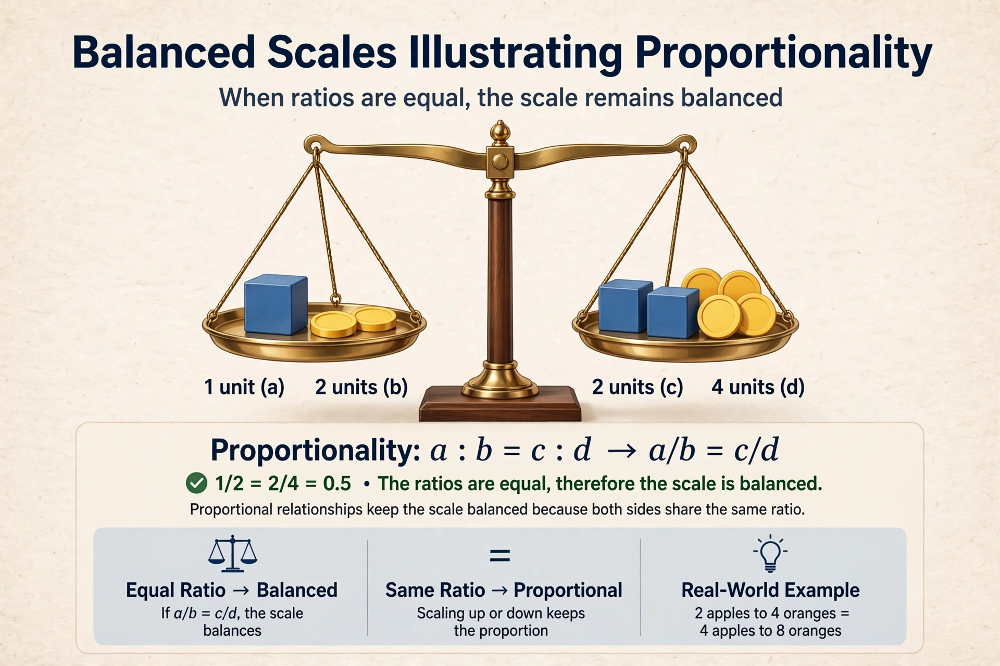

Proportionality is a general principle in law which covers several concepts. In constitutional and human rights law, a measure limiting a right must pursue a legitimate aim, be suitable and necessary for that aim, and strike a fair balance between the public interest and the individual's rights.

Proportionality is central to the European Convention on Human Rights, EU law, and the constitutional law of countries including Germany, Canada, and South Africa. Courts commonly apply a structured test: legitimate objective, rational connection, minimal impairment, and overall balancing (proportionality stricto sensu).
In criminal law, proportionality requires that punishment fit the seriousness of the offence. In international humanitarian law, it prohibits attacks expected to cause civilian harm excessive in relation to the anticipated military advantage.